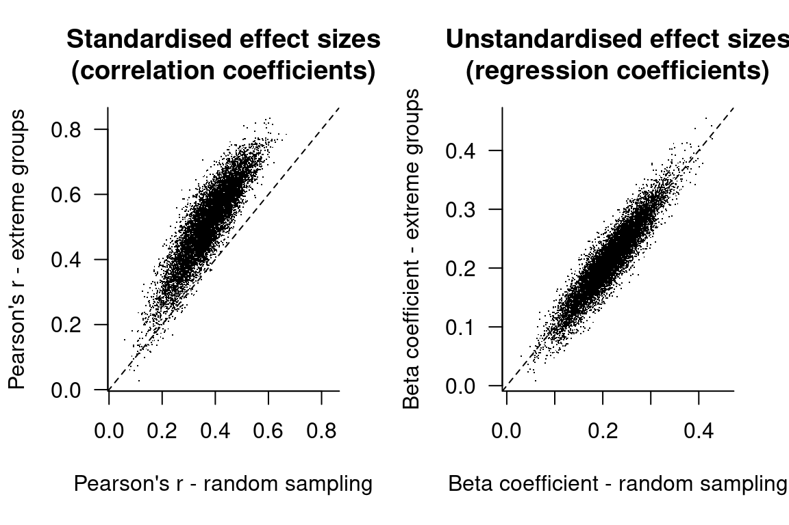
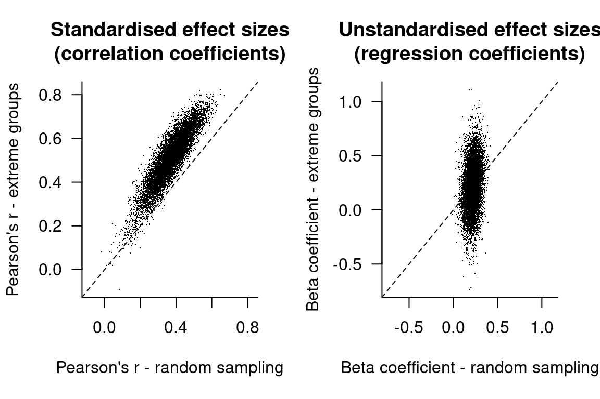

Why I don’t like standardised effect sizes
effect sizes
measurement error
With researchers (thankfully) increasingly realising that p-values are only poorly related to the strength of the effects that they study, standardised effect sizes such as Cohen’s d or Pearson’s r are reported more and more frequently. In this blog post, I give four reasons why I don’t like such standardised effect size measures and why I prefer unstandardised effect sizes instead.
As a brief refresher, unstandardised effect sizes express the patterns found in the data in the units in which they were measured. For instance, if you say that there is a 7-centimetre mean difference in body length between two groups in your sample, that’s an unstandardised effect size. Similarly, if you say that lexical decision times slow down by 4 milliseconds a year, that’s an unstandardised effect size, too.
Standardised effect sizes, by contrast, express these patterns by scaling the differences or trends by a measure of the variability within the sample. For instance, a 7-centimetre difference can be expressed as a difference of 0.6 standard deviations if the within-group standard deviation of body length is 12 centimetres (7/12 = 0.6). This standardised effect size measure is known as Cohen’s d. Similarly, 4-ms per year decrease in lexical decision times can correspond to a Pearson’s r of 0.27, of 0.05 and of 0.81 (among many other possibilities), depending on the variability in the participants’ ages and reaction times; Pearson’s r is a standardised effect size as well.
With that under our belts, here are the four reasons why I prefer unstandardised over standardised effect sizes.
Reason No. 1: Unstandardised effect sizes are often interpretable
Advocates of standardised effect sizes often point out that much research in the social sciences makes use of variables that were measured on arbitrary scales such as responses to questionnaire items. Say, for instance, that two researchers want to investigate attitude differences between two populations. One researcher makes use of a 5-point Likert scale and finds a 1-point difference between her two samples, whereas the other researcher makes use of a 13-point Likert scale and finds a 2-point difference. These results can be hard to compare: the 2-point difference isn’t necessarily larger than the 1-point difference in any real terms. By scaling these differences relative to the variability in their respective samples, the two researchers can express their findings in a common metric (e.g. between-group difference divided by within-group variability) and more directly compare their results. (When dividing between-group differences by within-group differences, the measurement units cancel out; standardised effect sizes are therefore also called ‘dimensionless’.)
I’ll admit that, in this situation, standardised effect sizes might serve a useful purpose (though see Reason No. 2 for a caveat). But, at least in the articles I read, it’s usually relatively straightforward to compare the raw effect sizes with one another. For instance, I can readily appreciate what a reaction time difference of 70 ms means in the context of a lexical decision task. In fact, it’s often easy enough to appreciate what a one-point difference on a 5-point Likert scale means (e.g. a shift from ‘no opinion’ to ‘tend to agree’), and what a two-point difference on a 7-point Likert scale means (e.g. a shift from ‘disagree slightly’ to ‘agree slightly’) if the response options have been appropriately labelled.
Similarly, when assessing the bivariate relationship between two variables, raw effect sizes (e.g. regression coefficients) are often straigthforward to interpret. Personally, I find an effect size statement like ‘response latencies slowed down by 4 milliseconds a year’ more meaningful than ‘response latencies were positively correlated with age (Pearson’s r = 0.17)’. Sure, the Pearson correlation coefficient provides information as to how much of the response time variance is ‘accounted for’ by age (in this example: 0.17² = 3%), but this is as much an indication about the research design than about the effect being studied—which brings us seamlessly to Reason No. 2.
Reason No. 2: Standardised effect sizes are more sensitive to the research design (and that’s a bad thing)
Compared to unstandardised effect sizes, standardised effect sizes are too sensitive to the way in which the data were collected. When computing standardised effect sizes such as Cohen’s d, we need to divide the between-group mean difference by the within-group standard deviation. So, if we reduce the within-group standard deviation, we’ll get a higher Cohen’s d value, even if the between-group mean difference itself is unaffected.
Reducing within-group differences is one of the primary goals of good experimental design. For instance, better measurement instruments will yield a smaller within-group standard deviation since the amount of measurement error is reduced. Similarly, taking multiple measurements of each participants and averaging them will produce a smaller within-group standard deviation and hence a higher Cohen’s d. But the between-group difference itself, which is what we’re really interested in, won’t be (shouldn’t be) affected by such improvements in the experimental design. (The same holds for Pearson’s r.) In this case, higher standardised effect sizes reflect better design, not larger effects. Unstandardised effect sizes, by contrast, aren’t affected by such improvements in the experimental design, though their standard errors are, appropriately reflecting the higher degree of accuracy.
Standardised effect sizes aren’t only sensitive to differences in measurement error, but also to differences in the sampling strategy. By way of example, let’s say that we want to characterise the (linear) relationship between two variables. To do this, we have the choice between two strategies:
- the costly route of sampling 100 participants randomly from the population and measuring Variables 1 and 2;
- the cheaper route of screening 100 participants drawn randomly from the population, measure them on Variable 1 and invite the 20 participants with the highest and the 20 participants with the lowest Variable 1 scores to the lab in order to run the costly test that yields Variable 2 (‘extreme group’ approach).
Does the difference in sampling strategy affect our estimate about the relationship between the two variables? I wrote a simulation with 10,000 runs to find out (R code).
In the panel on the left, I plotted the effect of random sampling vs. an extreme group approach on Pearson’s r. Most dots lie above the bisector, indicating that the extreme group approach yields standardised effect sizes that are higher than the random sampling approach. (In this case, the average Pearson’s r for the random sampling approach is 0.38, whereas it’s 0.52 for the extreme group approach.) The panel on the right shows the effect of different sampling strategies on the regression (‘beta’) coefficient, or better, the lack of such an effect. (The average beta coefficient is 0.22 for both approaches.)
Non-random sampling doesn’t necessarily boost the standardised effect size: restricting the analysis to the participants who are in the top-30% with respect to Variable 1 decreases Pearson’s r (left panel) on average from 0.37 to 0.21. (This might sound pretty similar to restricting the analysis to university-educated participants…) But it doesn’t affect the regression coefficients (right panel; 0.22 for both approaches). (The dots don’t lie along the bisector due to the differences in sample size that aren’t compensated for by extreme group sampling, but the point is that there are about as many dots above the bisector as there are below.)

The upshot is that research design affects standardised effect sizes even if the effect itself doesn’t change: the relationships we sought to characterise were the same in all cases. But if we had based our conclusions on the relative effect sizes, we could’ve been tempted to try to explain ‘differences’ between results in terms of hidden interactions and the like. By looking at the unstandardised effect sizes, it becomes clear that there is no conflict between the findings in the first place.
(Note that I’m not arguing in favour of extreme-group approaches, though it’s a given that as psychologists or linguists, we rarely if ever can make use of random sampling.)
Reason No. 3: Apples and oranges
In his 1992 Power Primer, Jacob Cohen tentatively suggested that correlation coefficients of 0.10, 0.30 and 0.50 could be considered small, medium and large effect sizes, respectively. Cohen derived this yardstick from the distribution of effect sizes in the psychological literature up till then.
A useful complement to this article is Plonsky and Oswald’s recent review in Language Learning. In it, they analyse the distribution of effect sizes in second language research and recommend that correlation coefficients of 0.25, 0.40 and 0.60 be considered small, medium and large in L2 research. But what I found more interesting than the results they report is their speculation about ‘Domain maturity and changes over time’:
There is no reason to assume that effects in any particular domain would remain static over time. … A first scenario in which effect sizes might change over time involves a trajectory of research outcomes for a particular domain in which methodological adjustments or improvements lead to larger [standardised, JV] effect sizes over time … an alternate and somewhat opposite pattern of effects may also play out in a body of empirical literature characterized by theoretical developments and maturation taking place over time. Early research in a given area is often characterized by strong manipulations that set out to determine whether an effect exists and thereby determine whether the claims of a particular and usually novel hypothesis merit further attention. Such experiments would tend to yield larger effect sizes (…) Subsequently, after an effect is found, research efforts may shift to the generalizability of an effect across samples, settings, tasks, and so forth …
So when comparing a Pearson’s r of 0.5 with one of 0.2 and labelling the first ‘medium-strong’ and the latter ‘small’, what are we really comparing? Real effect size, methodological rigour, theoretical sophistication or the fact that there’s less low-hanging fruit as time goes on?
A related point is that these yardsticks have become (or tend to become) gospel, much like the sacred 0.05 significance threshold. I hope I’m mistaken in this, but my impression is that most researchers doing power analyses out there just plug in a ‘medium’ or ‘large’ Cohen’s d or Pearson’s r and jot down the minimum sample size that the software returns. Perhaps it’s more useful to think about how sources of extraneous variance can be brought under control in order to increase power (tighter design, more accurate measures, including covariates), rather than assuming that whatever yardstick out there also applies to one’s own study.
Reason No. 4: What about more complex models?
All discussions and tutorials on standardised effect sizes that I’ve come across assume that you have a comparatively easy statistical model: if you run a t-test, compute Cohen’s d; report η² if you run an ANOVA; report Pearson’s r if you have two continuous variables; report R² if you run a multiple regression model etc.
But these concepts translate poorly to the statistical tools that I need to make use of. For instance, there is no unambiguous counterpart of R² in logistic regression models nor in mixed-effect regressions. When I report on such models in research papers, I usually include a footnote to this effect in order to fend off the inevitable (and understandable) remark that effect sizes need to be reported. Up till now, this has done the trick for me, but Dale Barr (of mixed-effect model fame) seems to have had more difficulties in this department:
Tell them how to compute a dimensionless effect size measure for cross classified multilevel data, oh editor, or don’t make it a requirement
— Dale Barr (@dalejbarr) February 4, 2015
tl;dr
Unstandardised effect sizes do their job just fine.